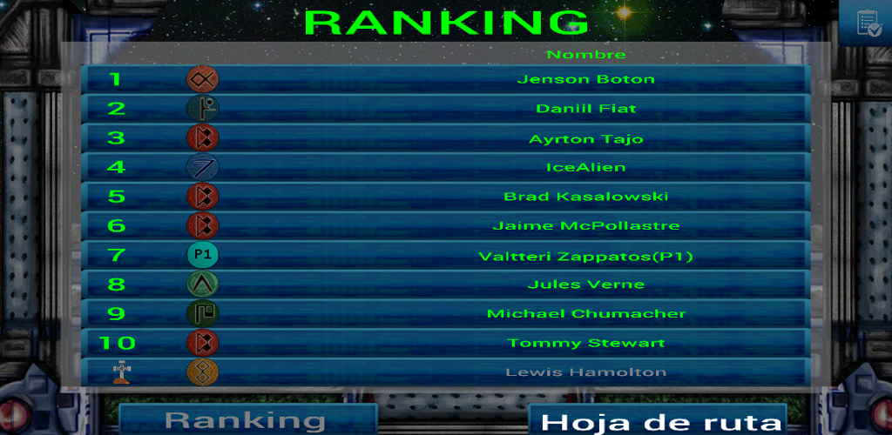
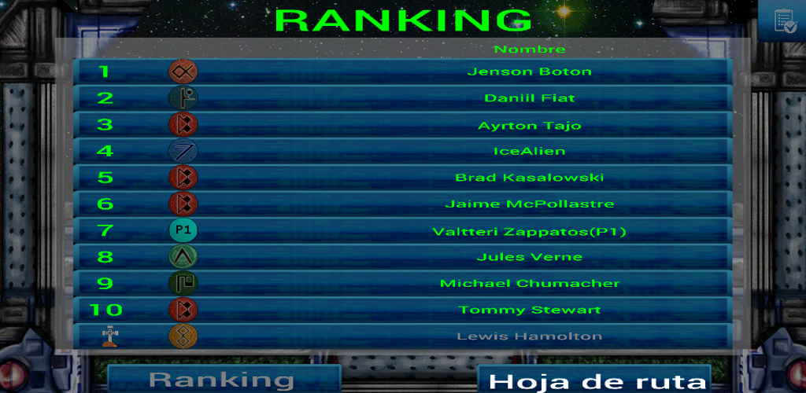

Games Developed
Game Jam 2015
Fly, you fools!
El juego consiste en enfrentar a dos jugadores en un runner en el cual uno tiene el poder de ser un dios y poner trampas al otro jugador. Pasado un tiempo, los roles se intercambiarán de manera que el jugador Humano pasará a ser Dios y viceversa.Tareas realizadas
- Creación del escenario con un algoritmo procedural.
- Creación de los diferentes poderes.
- Creación de diferentes menus.
- Gestión del repositorio.

Obtener más información
Perdidos en el laberinto
Tareas realizadas
- Creación de la red, y gestión de la misma
- Integración de las animaciones obtenidas en internet
- Integración del arte y recursos obtenidos de internet o la Asset Store de Unity.
- Creación del laberinto
- Simulación en la red para disminuir el ancho de banda
Manual del Juego
- En primer lugar deberemos elegir un nombre con el que jugaremos
- Deberemos elegir si queremos ser servidor o cliente
- Si somos servidor, una vez pulsado el botón, debermos esperar hasta que esten todos conectados
- Si somos cliente, podremos elegir entre buscar un servidor o realizar una conexión directa
- Nos podremos mover con las flechas o WASD
- Nosotros estamos en la esquina inferior izquierda del laberinto
- La espada celestial esta en la esquina superior derecha del laberinto
- El primero que consigue la espada, gana.


Obtener más información
Random Races
Random Races es un juego para Android desarrollado utilizando el motor de Android 3D. Todos los circuitos presentes en el juego se generan aleatoriamente mediante un algoritmo que se ha desarrollado para el juego. El juego surge como un proyecto personal para crear circuitos usando un algoritmo procedural y todo el desarrollo ha sido realizado de manera individual.
Tareas realizadas
- Creación del algoritmo de generación aleatoria de circuitos.
- Integración del juego con Google Games
- Creación de 70 leaderboards.
- Creación de 5 logros desbloqueables.
- Integración del arte y recursos obtenidos de internet o la Asset Store de Unity.
- Creación del sistema de MultiTouch.
- Creación del sistema de MultiThreading para la carga de los niveles.


Obtener más información
GalleryPuzzle9
Gallery Puzzle 9 es un juego para dispositivos Android en el que podremos jugar al clásico Puzzle 9 utilizando las fotos de la galería del móvil o una foto que tomemos en ese instante.
Tareas realizadas
- Toma de fotos o utilización de una foto de la galería para el juego
- Desarrollo de la búsqueda de la solución utilizando el algoritmo A*
- Dibujado de la foto utilizando el canvas de Android.
- Desarrollo de 3 niveles distintos

Obtener más información
Pit Stop
PitStop es un juego desarrollado durante mis estudios del Máster de Videojuegos en la Universidad Complutense de Madrid. Se trata de un juego para PSVita desarrollado con el motor de PhyreEngine y escrito en C++ y LUA. El juego consiste en manejar al jefe de mecánicos de unas carreras espaciales, donde en cada vuelta, nos llega la nave estropeada y tendremos un tiempo limitado para arreglarla. Durante la carrera, podremos aconsejar a nustro piloto jugando a diferentes minijuegos que nos darán dinero para comprar piezas que instalar.
Tareas realizadas
- Gameplay.
- Máquinas de estado escritas en LUA.
- Gestión de carreras y campeonatos.
- HUD.
- Diferentes herramientas para los diseñadores.
- Algunos minijuegos.
- Lógica de compra de piezas.
- Exportación desde 3DMax y Maya.
- Diferentes escenas del juego.
- IA.


 

Obtener más información
Game Jam 2014
La GameJam es un evento anual que consiste en realizar un juego por grupos de unas cinco personas en 48 horas sobre una temática que se comunica al momento de empezar el proyecto. La temática de este año era: "No vemos las cosas como son, las vemos como somos nosotros." Desarrollé un proyecto en Unity3D llamado:
Clowns & Grannies, Grannies & Clowns
El juego consiste en que disponemos de una pistola que envia personajes al cielo y otro al infierno y nosotros tendremos que decidir el destino de los personajes, teniendo en cuenta que mientras más constantes seamos, mas puntos obtendremos.
Tareas realizadas
- Creación de los menus del juego.
- Creación de la gestión de la vida.
- Gestión de los puntos del juego.
- Colaboración con el Gameplay.
- HUD.
- Creación de los mensajes finales del juego.


Obtener más información
Iron Hand
Iron Hand es un juego desarrollado durante la asignatura de Ingeniería del Software mientras estudiaba Ingeniería Informática. Se trata de un juego de estrategia en tiempo real y multijugador, desarrollado utilizando como motor XNA y como lenguaje de programación C#. En el juego, tomamos el control de algunos paises de europa durante la guerra fría. Podremos realizar alianzas, intercambio de recursos, creación de tropas,evolución de las mismas, y por supuesto, atacar y defendernos de nuestro enemigos. El juego acepta un total de 8 jugadores en una red local sin problemas.
Tareas realizadas
- Zoom.
- Construcción del mapa.
- Gestión del Input.
- Creación de la arquitectura básica de red.
- Depuración de la red.
- Depuración del GamePlay.
- Profiling.